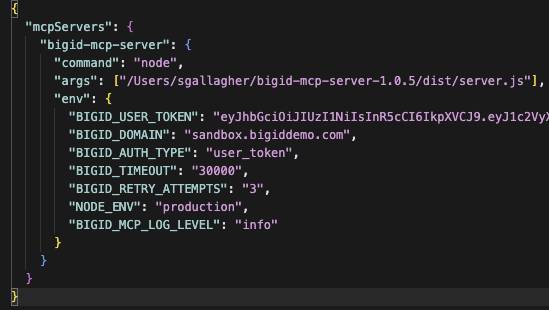

🚀 MCP Server Setup Guide for BigID MCP Server
📋 Prerequisites
- macOS (tested on macOS 14.4+)
- Node.js 18+ (will be installed if missing)
- Homebrew (will be installed if missing)
- BigID user token and domain
- Chrome browser (for viewing this guide)
- MCP-compatible client (Claude Desktop, Gemini CLI, etc.)
📝 About This Installation
The installation script will automatically handle dependencies and only request sudo permissions if both Node.js and Homebrew are missing. If you prefer to install Homebrew manually, you can do so at brew.sh.
⚙️ Step 1: Run the Installation Script
1
Execute the Installation Script
Open a terminal in the bigid-mcp-server-1.0.X directory and run:
./install.sh
This script will automatically:
- Check for and install Homebrew (if missing)
- Check for and install Node.js 18+ (if missing)
- Install all required npm dependencies
- Create MCP client configuration templates
- Set up Gemini CLI (if requested)
- Display this setup guide in Chrome
⚠️ Note: The script will only request sudo permissions if both Node.js and Homebrew are missing.
🔧 Step 2: Configure Your MCP Client
📋 Choose Your MCP Client Setup
Select the instructions for your preferred MCP client below:
🤖 Claude Desktop Setup
2a
Download Claude Desktop
First, download and install Claude Desktop from the official Anthropic website:
Download Claude Desktop
Follow the installation instructions for macOS.
2b
Open Claude Desktop Settings
Launch Claude Desktop and follow these steps:
- Click Claude in the menu bar
- Select Settings
- Navigate to the Developer tab
- Click the Edit Config button
- Edit the file in the text editor of your choice
- Add the MCP server configuration below
💎 Gemini CLI Setup
2a
Install Gemini CLI
The installation script will automatically check for and install Gemini CLI via Homebrew. If you prefer to install it manually:
brew install gemini-cli
Or download from: GitHub
2b
Gemini Configuration
The installation script can automatically create a Gemini configuration at ~/.gemini/settings.json or you can create .gemini/settings.json in your working directory for local configuration.
2c
Gemini Authentication Options
Gemini CLI supports two authentication methods:
Option 1: Google Account Authentication (Recommended)
- Launch Gemini CLI:
gemini
- Select Google account authentication when prompted
- Sign in with your Google account
- No API key needed!
Option 2: API Key Authentication
- Set your API key via environment variable:
export GEMINI_API_KEY="your-api-key-here"
Or add to your shell config file (~/.zshrc or ~/.bashrc):
echo 'export GEMINI_API_KEY="your-api-key-here"' >> ~/.zshrc
Then restart your terminal or run: source ~/.zshrc (or ~/.bashrc)
💡 Tip: Google account authentication is simpler and doesn't require managing API keys.
3
Add MCP Server Configuration
Add the following MCP server configuration to your client:
💡 Tip: The install script creates a pre-configured mcp-server-config.json file with the correct path to the MCP server already set. You can use that file as a template instead of manually adding it to the configuration below.
{
"mcpServers": {
"bigid-mcp": {
"command": "node",
"args": [
"/path/to/bigid-mcp-server/dist/server.js"
],
"env": {
"BIGID_USER_TOKEN": "your-actual-user-token-here",
"BIGID_DOMAIN": "your-bigid-domain.com",
"BIGID_AUTH_TYPE": "user_token",
"BIGID_TIMEOUT": "30000",
"BIGID_RETRY_ATTEMPTS": "3",
"NODE_ENV": "production",
"BIGID_MCP_LOG_LEVEL": "info"
}
"timeout": 30000,
}
}
}
⚠️ Important Configuration Notes
For both clients, replace the following values:
/path/to/bigid-mcp-server with the actual path to your installationyour-actual-user-token-here or user-token with your BigID user tokenyour-bigid-domain.com or sandbox.bigiddemo.com with your BigID server domain
🔐 Need Help Getting Your BigID User Token?
To get your BigID user token, you need to generate one from the BigID Access Management page:
Generate Token from BigID Access Management
- Go to Your BigID Instance: Visit your BigID domain (e.g., BigID Sandbox Environment)
- Sign In: Use your credentials to authenticate
- Navigate to Access Management: Go to the Access Management section in your BigID instance
- Generate API Token: Look for the option to generate Tokens
- GENERATE a Token: Click the GENERATE button
- Set Expiry: Configure the token expiry period as needed
- Copy the Token: Copy the generated token value
- SAVE your Changes: Click SAVE
- Add your token to the config: Paste your token into the BIGID_USER_TOKEN value
⚠️ Important Notes
- Token Types: The MCP server supports both access tokens and refresh tokens automatically
- Token Expiry: These tokens typically expire and need to be replaced periodically
- Domain-Specific: BigID tokens are NOT cross-domain. You must use a different token for each BigID domain/instance
- Security: Keep your tokens secure and don't share them
- Demo Site: The sandbox demo is perfect for testing the setup
- Restart Client: Always restart your MCP client (Claude Desktop, Gemini CLI, etc.) after changing the config
📝 How to Use Your Token
- Copy the Token: Copy the generated token from the Access Management page
- Update Configuration: In your MCP client config, replace the placeholder with your token
- Test: Restart your MCP client and ask it to use the BigID MCP server

Example MCP server configuration
📚 Step 4: Start Using BigID with Your MCP Client
4
Start Your MCP Client
Launch your chosen MCP client to begin using the BigID MCP server.
- Claude Desktop: Open Claude Desktop and start a new chat
- Gemini CLI: Run
gemini in your terminal
🎯 Step 5: Begin Your BigID Queries
5
Ask Your MCP Client About Your BigID Data
Now you can ask your MCP client questions about your BigID data! Your client has access to all the BigID tools and can help you explore your data catalog, security posture, and more.
🔧 How to Invoke BigID MCP Server Tools
To use the BigID MCP server, you need to specifically ask your LLM to use tools from the BigID MCP server. Here are some example prompts:
📊 Inventory and Data Discovery
- "Use the BigID MCP server to get inventory aggregation data"
- "Show me the data categories from BigID using the MCP server tools"
- "Use BigID tools to search for catalog objects"
🛡️ Security and Compliance
- "Use BigID MCP server to check for security cases"
- "Show me security trends using the BigID tools"
- "Use BigID to get cases grouped by policy"
📚 Catalog and Metadata
- "Use BigID MCP server to search metadata"
- "Get catalog tags using BigID tools"
- "Use BigID to find object details"
🔗 Lineage and Relationships
- "Use BigID MCP server to get lineage tree"
- "Show me data lineage using BigID tools"
🔐 Access Control and Identity
- "Use BigID MCP server to get ACI data manager information"
- "Show me ACI groups using BigID tools"
- "Use BigID to get ACI users"
⚠️ Important Notes
- Be Specific: Mention "BigID MCP server" or "BigID tools" in your requests if the LLM is being thick about using the BigID MCP server
- Tool Names: The LLM will automatically use the correct tool names (like
get_inventory_aggregation, get_security_cases, etc.)
- Parameters: You can specify filters, pagination, and other parameters in natural language
- Examples: "Use BigID MCP server to get security cases with high severity" or "Show me catalog objects tagged as PII using BigID tools"
💡 Note: There is a BigID filter spec resource that can be added to your chat. It is primarily used for constructing custom queries for catalog endpoints. For most use cases, you can simply ask your MCP client to use the BigID MCP server directly.
⚠️ CRITICAL SECURITY WARNING
Always validate MCP tool queries and results:
- Inspect Tool Queries: Always review the MCP tool queries and results to see the raw data
- Validate Results: Cross-reference your MCP client's analysis against the raw data returned by the MCP tools
- Verify Accuracy: Don't rely solely on your MCP client's interpretation - check the underlying data yourself
- Review Permissions: Don't send anything to your MCP client that you aren't allowed to send
Remember: MCP clients are AI assistants that can make mistakes. Always validate both the queries being made and the conclusions drawn from the results.
🔍 Available Tools
Your MCP client has access to these BigID tools:
🚨 Troubleshooting
Common Issues and Solutions
- MCP Server Not Starting: Check that Node.js is installed and the server path is correct
- Authentication Errors: Verify your BigID user token in the configuration
- Bad Tool Queries: Ensure the BigID resource is added to each new chat
- Connection Issues: Check your network connection and BigID server accessibility
- Token Expired: Replace your user token if it has expired
- Gemini CLI Issues: Ensure you're authenticated with Google account or have set your API key
✅
You're All Set!
Congratulations! You've successfully set up your MCP client with the BigID MCP server. You can now use your chosen client to interact with your BigID data.